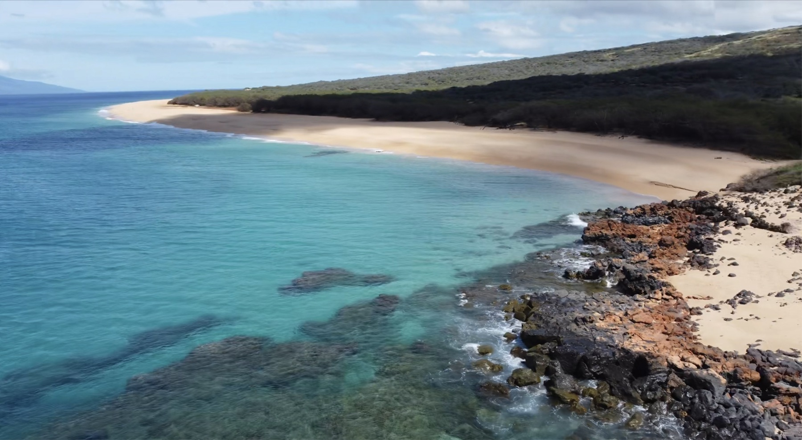
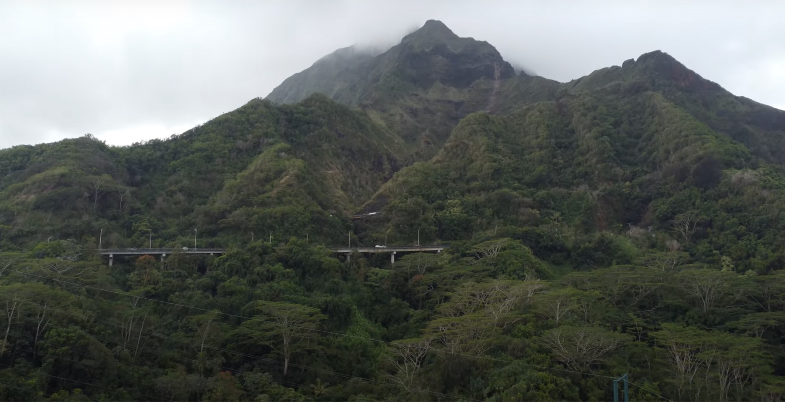
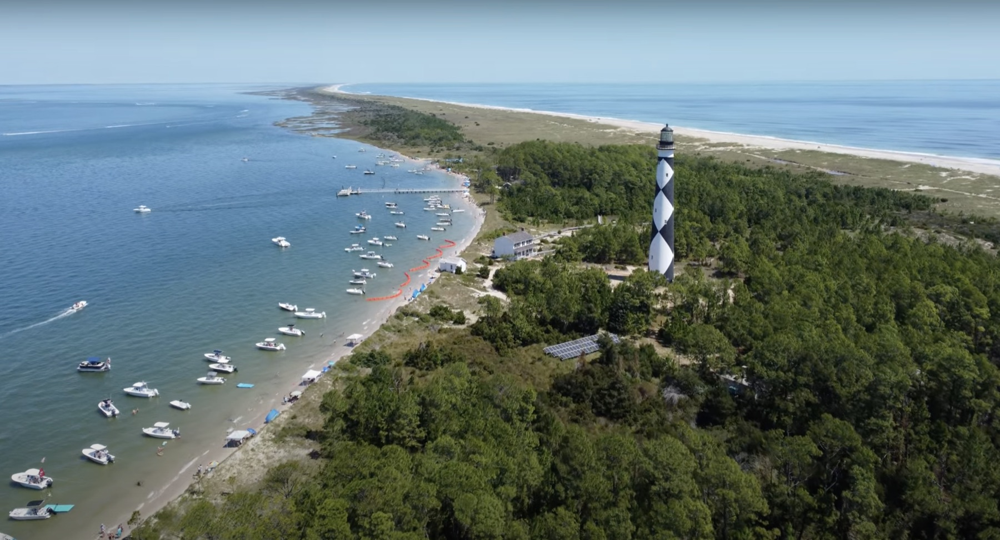
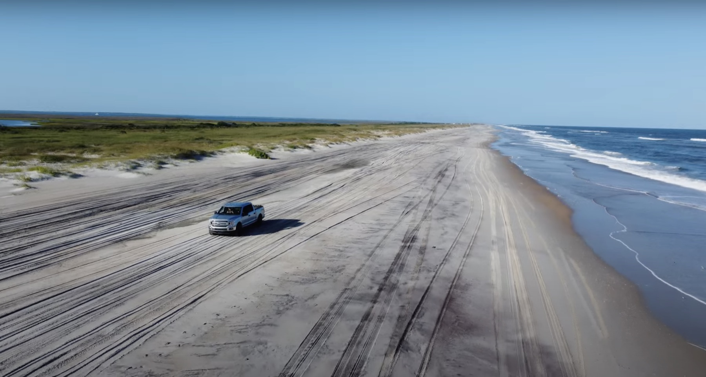
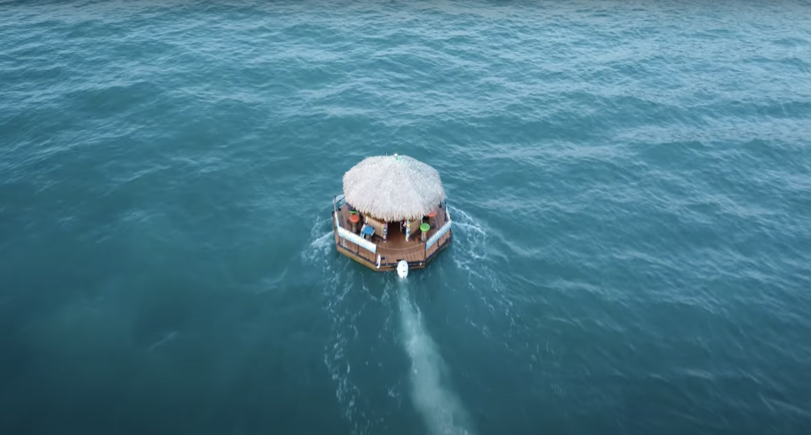
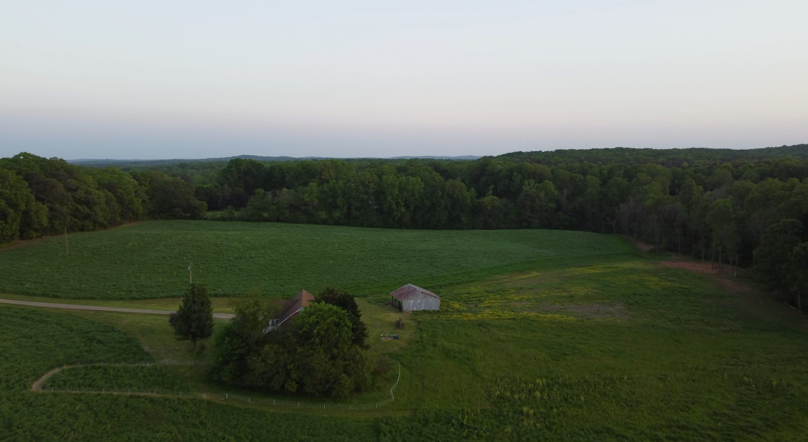
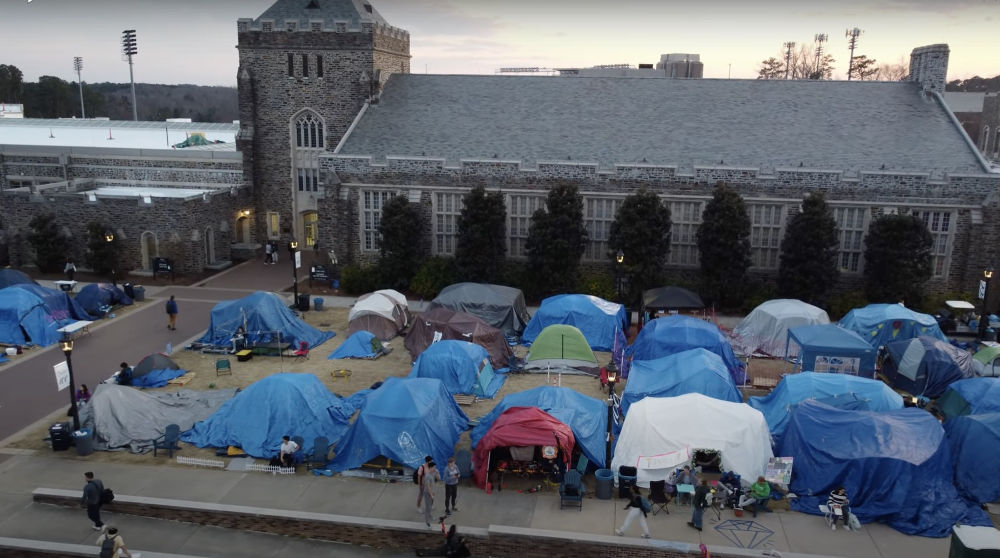
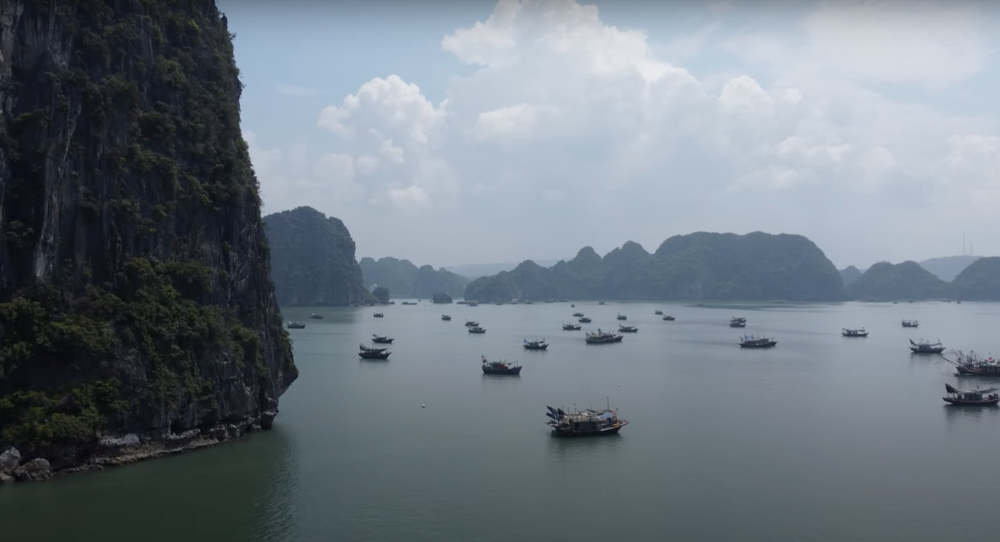
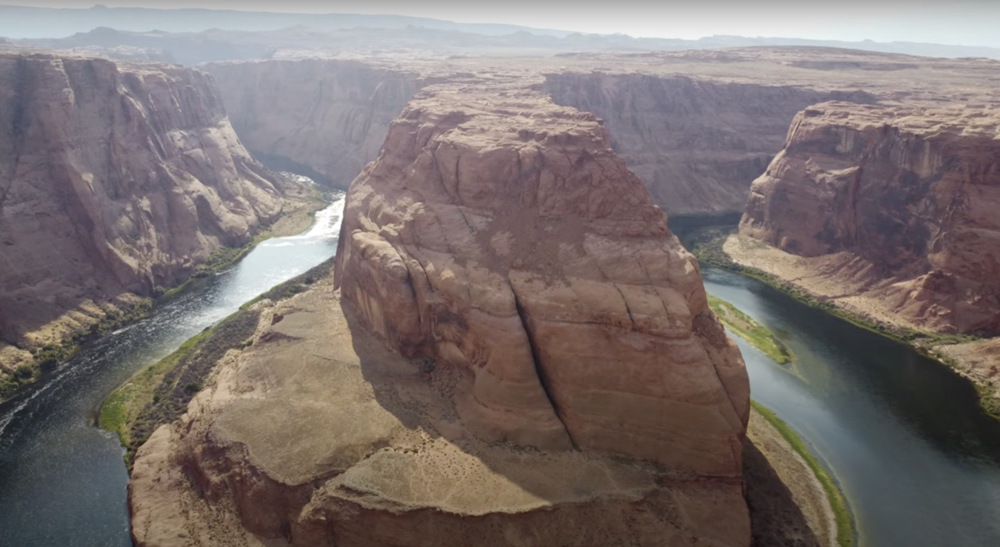
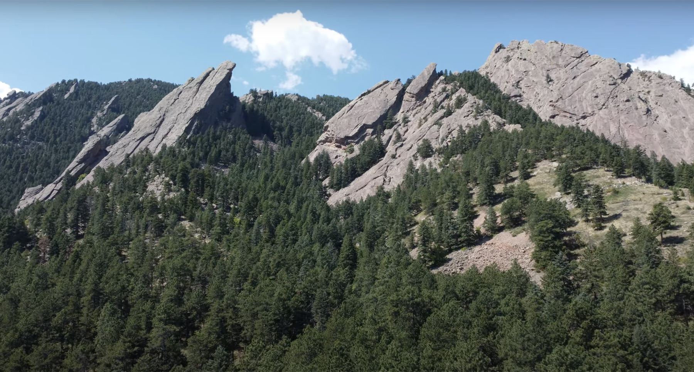

Appreciating Nature from the Sky
Nature and photography are two of my favorite hobbies, so when I received a DJI drone as a Christmas gift in 2022, it felt like the perfect fit. Since then, my drone has accompanied me on countless adventures as I seek out stunning locations for captivating aerial shots. I love compiling these moments into memento videos that allow me to relive each trip.
I’ve found that expressing my creativity through drone photography enhances my skills as an engineer. It inspires me to travel more, broadening my perspective of the world. Oftentimes, while flying my drone, locals stop by and strike up a conversation, allowing me to build new connections and deepen my appreciation for diverse cultures. These experiences have helped form me into the person I am today!
Recently, I decided to upload all my drone footage to one central location for easy access and nostalgia. I’ve organized my clips by destination on my YouTube profile. Below, I’ve shared some of my favorite shots from these videos. Enjoy!









